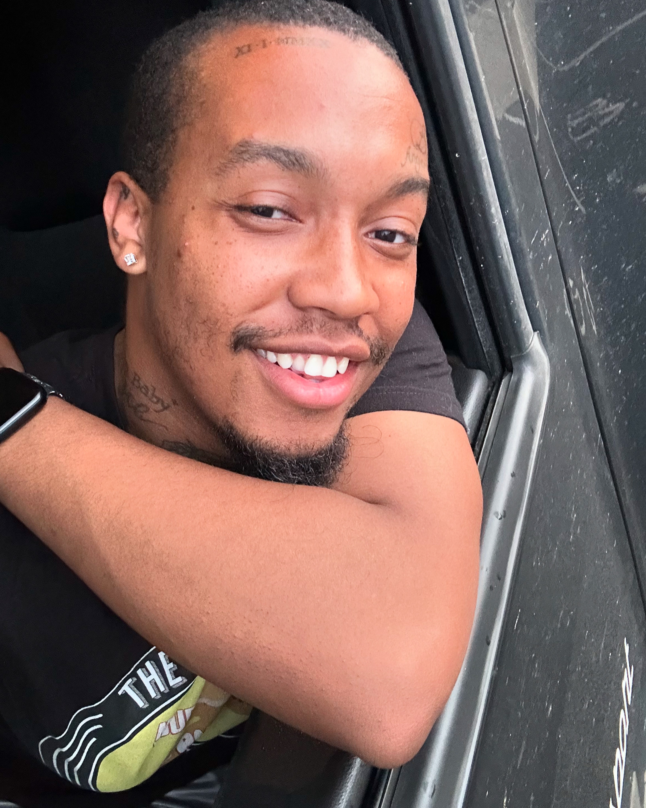

My Very First Coding Trial
Here is my very first trial, I took the time to learn from Team Treehouse and youtube. I'm a truck driver, and when I am not driving I take the time to learn code and do the quizzes and tests. When I am "busier", I watch tutorials so I can memorize the different html and css terms.
My Goals
It is my ultimate goal to stop driving and become a full time web developer. I am very eager to learn something new, and so far the journey has been wonderful, and it constantly feeds my curiosity to learn.
- I would like to earn my Techdegree
- I would like to then move on to earning my Javascript Techdegree>
- Once I finish I would like to search for jobs, and in the mean time go for my Python Techdegree
About Me
I have been driving trucks for 6 years, and I have also been doing nails for 5 years. Even though these were wonderful occupations, I would love to just sit at a computer and type my life away. I somehow have loved office work, I am weird in that way.
Born and raised in Atlanta, Ga, I have worked many jobs, but so far this has been the most fun, and I have just started.
Proving My Worth
It is very important to me that I really keep learning and keep staying in the know. I want this first project or trial to be something significant. After all those videos tutorials, I want to see what I can do without instruction.
I know it is not a race but a smooth marathon, but I am determined to keep learning and blossomin, and seeing my growth from this trial tonight.